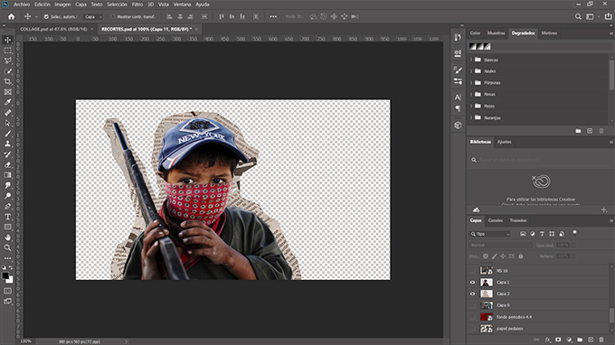
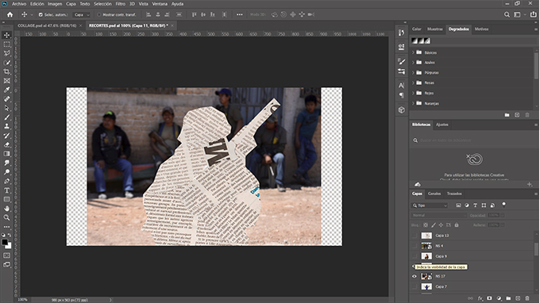
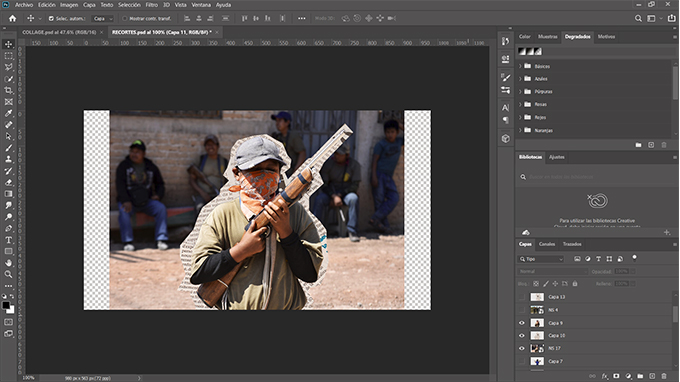
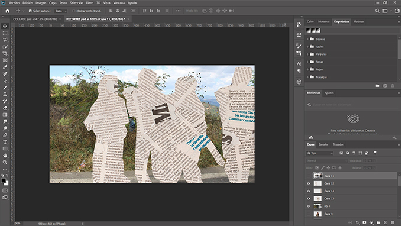
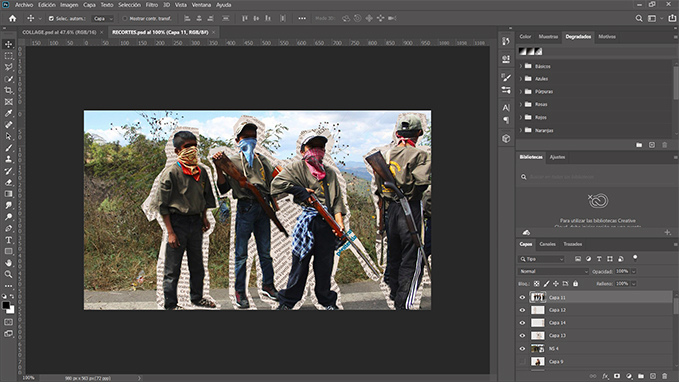
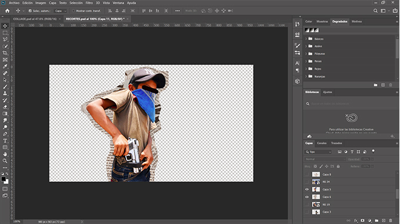
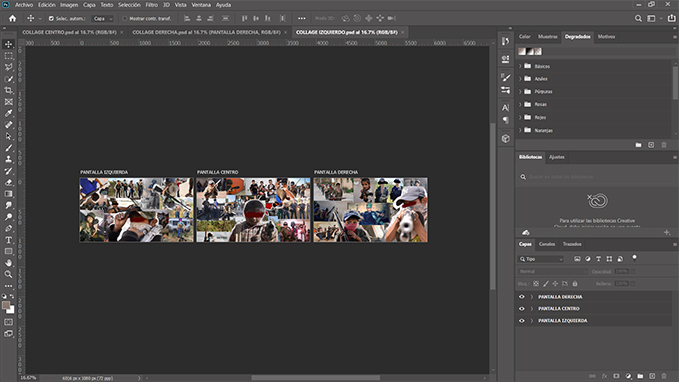
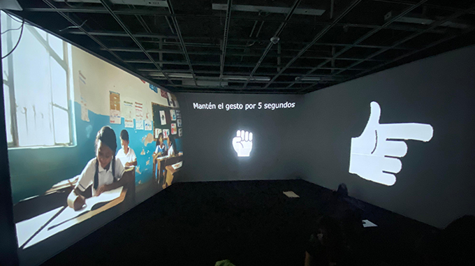
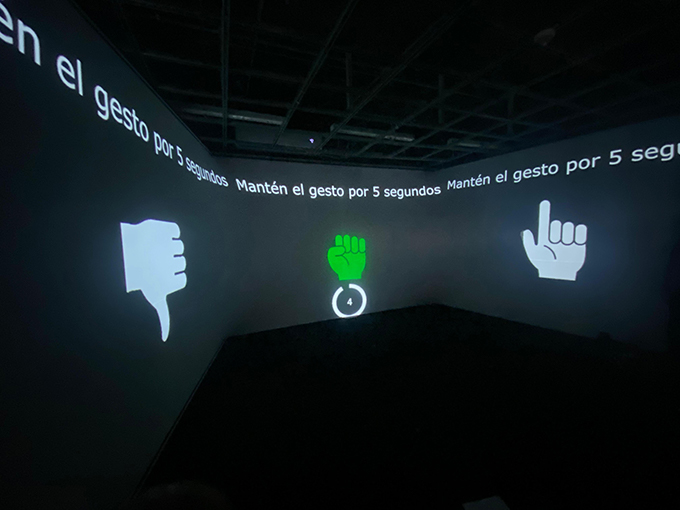

TouchDesigner: Programación de la Interactividad
Capturas del entorno de trabajo donde se construyó la interactividad gestual de la instalación.


Capturas de pantalla y evidencias del desarrollo técnico del proyecto en diversas etapas y plataformas.
Capturas del entorno de trabajo donde se construyó la interactividad gestual de la instalación.
Fotografías y gráficos de las señas creadas para ser reconocidas por la cámara del sistema interactivo.
Capturas de las indicaciones textuales (prompts) utilizadas en la plataforma para generar contenido visual mediante IA.


Proceso de edición y manipulación digital de imágenes para la creación de las texturas y collages simbólicos del proyecto.







Documentación de las pruebas técnicas realizadas en un salón de proyección especializado.

